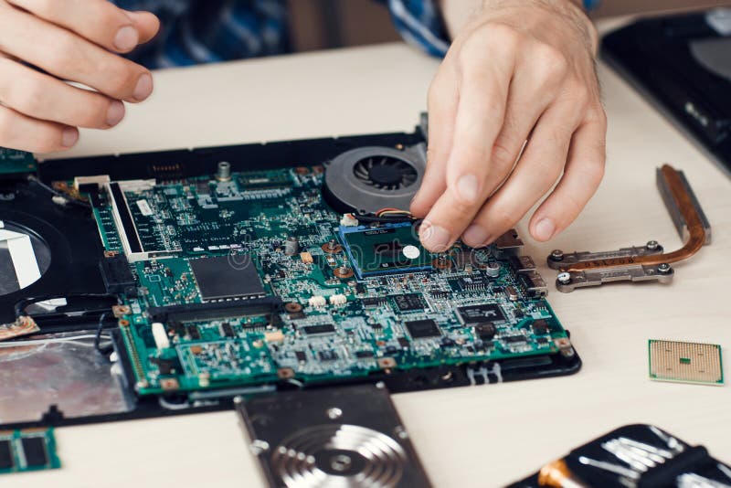

Lista de servicios
Precios de referencia. El valor final se confirma después del diagnóstico según modelo y repuesto.
| Servicio | Tiempo estimado | Precio desde |
|---|---|---|
| Diagnóstico | 24 horas | $8.000 |
| Limpieza y cambio de pasta térmica | 1 día | $15.000 |
| Formateo e instalación de Windows | 1 a 2 días | $18.000 |
| Cambio de disco HDD a SSD | 1 día | $12.000 + disco |
| Reparación de notebook (pantalla / teclado) | 3 a 5 días | $25.000 |
| Armado de PC gamer | 2 a 4 días | $30.000 + partes |
Ejemplos de trabajos

Recuperamos equipos que no encienden, con sobrecalentamiento o con el sistema lento por malware.
Guía de mantenimiento de Intel para quienes quieren cuidar la PC en casa.